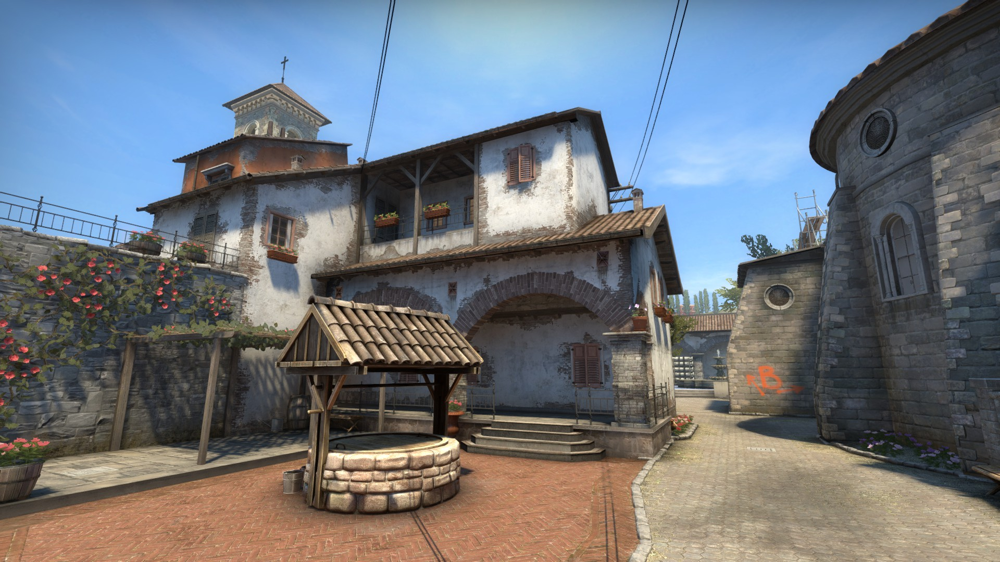

Pályák
A fő játékmódban a terroristák és a terrorelhárítók harcolnak a győzelemért. Az előbbieknek egy bombát kell elhelyezniük egy adott pontra, és megvárni a visszaszámlálás lejártát, míg terrorelhárítók ezt megpróbálják megakadályozni. Mivel az egyik legnépszerűbb Esport játék, a kiegyensúlyozott pálya design nagyon fontos, hogy mindkét csapat azonos esélyekkel induljon. Ennek legjobb kivitelezése a Dust2 pályával sikerült, ami a mai napig a legnépszerűbb (képen látható).
Legismertebbek
 Mirage
Mirage
Ez a pálya a Dust2 mellett a legbalanszáltabb, talán kicsit a terroristáknak kedvez, de ez ember kérdése, valaki terrorelhárítóként szereti jobban.
Egyik legikonikusabb pillanat a pályáról, amikor az Ence legyőzi a Na'vi-t és bejut az IEM Katowice döntőjébe erről többet: Itt
